اقرأ الفكرة،
لا الصفحات.
خلاصات مركّزة لأهم الكتب، وأداة تلخّص نصوصك، وفيديوهات مختارة. اقرأ، ركّز، وحوّل الفكرة إلى خطوة.
جرّب أداة التلخيص تصفّح الخلاصات
قراءة سريعة · فكرة واضحة · خطوة عملية
كل ستّون، ببحث واحد
خلاصات، فيديوهات، وأدوات تساعدك تبدأجديد: ٦ قصائد بقراءة نص مفتوح على ويكي مصدر، ضمن الدفعة ١٢٢ ←
جديد محليا: ٦٤ قراءة موثقة في الأدب والفكر والتاريخ، ضمن الدفعات ٥٥ و٥٦ و٥٧ ←
جديد محليا: ٥٥ قراءة موثقة في الأدب والفكر والتاريخ، ضمن الدفعتين ٥٣ و٥٤ ←
جديد: ٣٠ كتابا مجانيا في العلم والفلسفة والتاريخ والأدب، بقراءات محددة النطاق وروابط رسمية ←
جديد: ٣٠ كتابا مجانيا في العلم والفلسفة والتاريخ والأدب، بقراءات محددة النطاق وروابط رسمية ←
جديد: ٣٠ كتابا مجانيا في العلم والفلسفة والتاريخ والأدب، بقراءات افتتاحية وروابط رسمية ←
جديد: ٨ مداخل من الكتب المطلوبة وصفحتا تغطية إضافية غير محتسبة، مع تصحيح خريطة أجزاء السنوسية ←
جديد: ٢٩ عملا لمصطفى محمود وعدد خاص، مراجع طبعات تجارية ومداخل موثقة ←
جديد: ٢٥ عملا لمصطفى محمود وخمسة أعداد خاصة، مراجع طبعات تجارية ومداخل موثقة ←
جديد: استكمال ما وراء الطبيعة وأعمال تاريخية للصلابي، ٣٠ عملا منها ٧ مجانية رسميا ←
جديد: استكمال ما وراء الطبيعة بالأعداد ٣١–٦٠، مراجع قراءة تجارية ←
جديد: ٣٠ كتابا من الطلبات والسلاسل، منها كتاب بقراءة مجانية رسمية ←
جديد: ٣٠ كتابا من الطلبات والسلاسل، منها ٦ بقراءة مجانية رسمية ←
جديد: ٣٠ كتابا في سير ومذكرات وفكر، منها ٣٠ بقراءة مجانية رسمية ←
جديد: ٣٠ كتابا في روايات وقصص من الأدب العربي والعالمي، منها ٣٠ بقراءة مجانية رسمية ←
جديد: ٣٠ كتابا في روايات وقصص من آداب العالم، منها ٣٠ بقراءة مجانية رسمية ←
جديد: ٣٠ كتابا في روايات وقصص من آداب العالم، منها ٣٠ بقراءة مجانية رسمية ←
جديد: ٣٠ كتابا في الروايات والخيال العلمي، منها ٣٠ بقراءة مجانية رسمية ←
جديد: ٣٠ كتابا في الأدب والنقد والترجمة، منها ٣٠ بقراءة مجانية رسمية ←
جديد: ٣٠ كتابا في السيرة والتاريخ والفن والرحلة، منها ٣٠ بقراءة مجانية رسمية ←
جديد: ٣٠ كتابا في العلم والرحلة وتاريخ الأفكار، منها ٣٠ بقراءة مجانية رسمية ←
جديد: ٣٠ كتابا في الذاكرة والمدينة والتحولات، منها ٣٠ بقراءة مجانية رسمية ←
جديد: ٣٠ كتابا في النفس والمجتمع والحكاية، منها ٣٠ بقراءة مجانية رسمية ←
جديد: ٣٠ كتابا في الفلسفة والسرد والذاكرة، منها ٣٠ بقراءة مجانية رسمية ←
جديد: ٣٠ كتابا في التاريخ والعمل والعالم الرقمي، منها ٣٠ بقراءة مجانية رسمية ←
جديد: ٣٠ كتابا في العلم والطبيعة والخيال، منها ٣٠ بقراءة مجانية رسمية ←
جديد: ٣٠ كتابا في الفكر والفنون والتعليم، منها ٣٠ بقراءة مجانية رسمية ←
جديد: ٣٠ كتابا في الفن والثقافة وأسئلة الإنسان، منها ٣٠ بقراءة مجانية رسمية ←
جديد: ٣٠ كتابا في الفن والمجتمع والجغرافيا والعلوم، منها ٣٠ بقراءة مجانية رسمية ←
جديد: ٣٠ كتابا في البيئة والبيانات والأدب والفكر، منها ٣٠ بقراءة مجانية رسمية ←
جديد: ٣٠ كتابا في الأدب والفلسفة والتاريخ والعلوم، منها ٣٠ بقراءة مجانية رسمية ←
جديد: ٣٠ كتابا في الأدب والفلسفة والسير، منها ٢٧ بقراءة مجانية رسمية ←
جديد: ٣٠ كتابا في الأدب والفلسفة والسير، منها ٢٧ بقراءة مجانية رسمية ←
جديد: ٣٠ كتابا في الفكر والمسرح والعلوم، منها ٢٧ بقراءة مجانية رسمية ←
جديد: ٣٠ كتابا في الفن والحرية وأسئلة المعرفة، منها ٢٧ بقراءة مجانية رسمية ←
جديد: ٣٠ كتابا في الذاكرة والمسرح وعالم الحياة، منها ٢٧ بقراءة مجانية رسمية ←
جديد: ٣٠ كتابا في العقل والأدب والعلم، منها ٢٣ بقراءة مجانية رسمية ←
جديد: ٣٠ كتابا في الإنسان والحضارة، منها ١٦ بقراءة مجانية رسمية ←
جديد: ٣٠ كتابا مجانيا في الفكر والاقتصاد والعلوم والأدب ←
جديد: ٣٠ قراءة لكتب مجانية رسميا ←
جديد: ٣٠ قراءة، منها ٢٨ كتابا مجانيا رسميا ←
جديد: ٣٠ قراءة عن النفس والمعنى والشعر والكون ←
على رفّ ستّون
٥٥ كتاباً بين خلاصات ونبذات موثقة. تطوير الذات
تطوير الذات
العادات الذرية
التغيير الكبير ينتج عن تحسينات صغيرة متكررة.
⏱ ٦٠ ثانية · جيمس كليراقرأ الخلاصة ← فيديو متاح داخل صفحة الكتاب إنتاجية
إنتاجية
العمل العميق
غلاف طبعة جرير: عمل عميقالقدرة على التركيز مهارة نادرة ومربحة.
⏱ ٦٠ ثانية · كال نيوبورتاقرأ الخلاصة ← فيديو متاح داخل صفحة الكتاب مال وأعمال
مال وأعمال
سيكولوجية المال
النجاح المالي سلوك أكثر منه معرفة تقنية.
⏱ ٦٠ ثانية · مورغان هاوسلاقرأ الخلاصة ← فيديو متاح داخل صفحة الكتاب تطوير الذات
تطوير الذاتالعادات السبع للناس الأكثر فعالية
الفعالية تبدأ من اختياراتك اليومية ومبادئك، لا من ازدحام جدولك.
⏱ نحو ٦٠ ثانية · ستيفن كوفياقرأ الخلاصة ←فيديو متاح داخل صفحة الكتاب![غلاف طرق التفكير، الطبعة العربية من Mindset]() التعلّم والنمو
التعلّم والنموالعقلية
غلاف الطبعة العربية: طرق التفكيرقدرتك الحالية ليست حكماً نهائياً على ما يمكنك تعلّمه.
⏱ نحو ٦٠ ثانية · كارول دويكاقرأ الخلاصة ←فيديو متاح داخل صفحة الكتاب إدارة الوقت
إدارة الوقتاصنع وقتاً أكثر من المتاح
لا تنتظر وقتاً فارغاً لما تحب. اختر له مكاناً في يومك.
⏱ نحو ٦٠ ثانية · جيك ناب وجون زيراتسكياقرأ الخلاصة ←فيديو متاح داخل صفحة الكتاب تركيز وأولويات
تركيز وأولوياتالجوهرية
أنجز ما يستحق، بدلاً من محاولة إنجاز كل شيء.
⏱ نحو ٦٠ ثانية · غريغ ماكيوناقرأ الخلاصة ←فيديو متاح داخل صفحة الكتاب علاقات وتواصل
علاقات وتواصلكيف تكسب الأصدقاء وتؤثر في الناس
العلاقات الجيدة تنمو عندما يشعر الآخر أنك تفهمه وتحترمه.
⏱ نحو ٦٠ ثانية · ديل كارنيغياقرأ الخلاصة ←فيديو متاح داخل صفحة الكتاب تعليم وتفكير
تعليم وتفكيرأسس التفكير العلمي
التفكير العلمي منهج لفحص المعرفة، لا مجرد قائمة معلومات.
⏱ نحو ٦٠ ثانية · زكي نجيب محموداقرأ الخلاصة ←لا يوجد فيديو موثّق لهذا الكتاب بعد أدب وثقافة
أدب وثقافةبين بين
مقالات تنظر إلى الأدب والمجتمع بعين ناقدة لا تجامل القارئ.
⏱ نحو ٦٠ ثانية · طه حسيناقرأ الخلاصة ←لا يوجد فيديو موثّق لهذا الكتاب بعدرفّ أدهم شرقاوي
٨ نبذات موثقة وروابط عربية من دار كلمات ملخص موضوعي موثق
ملخص موضوعي موثقليطمئن قلبي
حافلة تصل الريف بالمدينة تجمع ركاباً يحمل كل منهم سؤالاً مختلفاً. عبر الحب والشك والمرض والفقد، تعرض رواية أدهم شرقاوي بحثاً مشتركاً عن معنى يجعل الحياة أكثر احتمالاً.
أدهم شرقاوي · ملخص موضوعي موثقاقرأ الملخص الموضوعي ←فيديو: ملخص ومراجعة داخل صفحة الكتاب ملخص موضوعي موثق
ملخص موضوعي موثقرسائل من القرآن
يقدّم أدهم شرقاوي وحدات قصيرة تنطلق من آيات قرآنية إلى خواطر عن الرجاء والصبر ومعاملة الناس. ما يجمعها هو دعوة القارئ إلى مراجعة نفسه، لا تقديم تفسير شامل للقرآن.
أدهم شرقاوي · ملخص موضوعي موثق اقرأ الملخص الموضوعي ←فيديو: ملخص داخل صفحة الكتاب نظرة موجزة
نظرة موجزةمع النبي صلى الله عليه وسلم
يصل أدهم شرقاوي بين القصة والعبرة: مواقف مروية تفتح أسئلة عن الرحمة والتواضع والثبات على المبادئ في حياتنا اليومية.
أدهم شرقاوي · نظرة موجزةاقرأ النظرة الموجزة ←فيديو: مراجعة / مناقشة داخل صفحة الكتاب نبذة تعريفية
نبذة تعريفيةرسائل من الصحابة
يعرض الناشر مشروعا يربط مواقف الصحابة بأسئلة الحياة المعاصرة، من الأسرة والصداقة إلى العمل والجيرة.
أدهم شرقاوي · نبذة تعريفيةتعرّف إلى الكتاب ←فيديو: مراجعة / مناقشة داخل صفحة الكتاب نظرة موجزة
نظرة موجزةالسلام عليك يا صاحبي
رسائل وخواطر عن الحزن والصداقة والإيمان، تخاطب القارئ بصوت قريب وتذكره بأن من يواسي الآخرين قد يحتاج هو أيضا إلى المواساة.
أدهم شرقاوي · نظرة موجزةاقرأ النظرة الموجزة ←فيديو: ملخص داخل صفحة الكتاب نظرة موجزة
نظرة موجزةعلى منهاج النبوة
ينظر الكتاب إلى الاقتداء بالنبي من زاوية المعاملة اليومية: كيف يظهر أثر المحبة في التصرف مع الأسرة والأصحاب وعند الخلاف؟
أدهم شرقاوي · نظرة موجزةاقرأ النظرة الموجزة ←فيديو: ملخص داخل صفحة الكتاب نظرة موجزة
نظرة موجزةأنت أيضا صحابية
نصوص قصيرة موجهة للمرأة المسلمة، تصل قيمة القدوة بأخلاق الحياة اليومية مثل الرحمة والإحسان وحب الخير.
أدهم شرقاوي · نظرة موجزةاقرأ النظرة الموجزة ←فيديو: ملخص داخل صفحة الكتاب نظرة موجزة
نظرة موجزةإلى المنكسرة قلوبهم
خواطر وحكايات قصيرة عن الخيبة والفقد والكرامة، تتوجه إلى المتألم بلغة المواساة والإيمان لا بوعد علاجي.
أدهم شرقاوي · نظرة موجزةاقرأ النظرة الموجزة ←فيديو: مراجعة / مناقشة داخل صفحة الكتابمال وتطوير ذات
تعرّف إلى الكتاب والمؤلف قبل أن تختار ملخص موضوعي موثق
ملخص موضوعي موثقالأب الغني والأب الفقير
زيادة الراتب لا تكفي إذا زادت معها المصروفات. يقترح روبرت كيوساكي أن تبدأ علاقتك بالمال بفهم حركته، ثم ببناء موارد تدر دخلاً، لا بمطاردة دخل أعلى وحده.
روبرت تي كيوساكي · ملخص موضوعي موثقاقرأ الملخص الموضوعي ←فيديو: ملخص داخل صفحة الكتاب مال وتطوير ذات
مال وتطوير ذاتكيف تصبح مليونير
عنوان عربي متاح ككتاب إلكتروني لدى جرير، من تأليف مؤمن النجدي.
مؤمن النجدي · نبذة موثقةتعرّف إلى الكتاب ← لا يوجد فيديو موثّق لهذا الكتاب بعدخذ الخطوة التالية: الكتب الأصلية
مصادر المؤلفين والناشرين للقراءة أو الشراءمساحتك للمذاكرة
مؤقّت للتركيز، مهام واضحة، وخطة للأسبوعجلسة تركيز
خذ استراحة قصيرة، ثم اختر خطوتك التالية.
جرّب الصوت قبل الجلسة وارفع صوت الوسائط. اترك الصفحة ظاهرة؛ لا نضمن التنبيه عند قفل الشاشة أو إيقاف المتصفح في الخلفية. لو ستقفل الشاشة، اضبط مؤقّت تطبيق الساعة بنفس المدة.
قائمة إنجازك
مهامك محفوظة على هذا المتصفح فقط، وليست متزامنة بين الأجهزة. لا تضف معلومات حساسة.
جدول مذاكرتك
حدّد وقتك، اختر مادتك، وابدأ بهدوء.
جدول أسبوعي متكرر، محفوظ على هذا المتصفح فقط. لا توجد مزامنة أو تنبيهات خارج الصفحة. أضف استراحات بين الجلسات، ولا تضع معلومات حساسة.
خلاصات تستحق المشاهدة
فيديوهات عربية من قنوات مستقلة على يوتيوب⭐ ستّون بلس
خلاصات موسّعة (٥ دقائق)، قوائم قراءة جاهزة، وبطاقات مراجعة قابلة للطباعة.
انضم لقائمة الانتظارروايات وعوالم أخرى
ثلاثية زيكولا، أصوات كاتبات، وغموض وتشويق فانتازيا ومغامرة
فانتازيا ومغامرةأرض زيكولا
البداية الأولى لسلسلة يدخل فيها خالد عالماً تُستخدم فيه وحدات الذكاء بدلاً من المال.
عمرو عبد الحميد · نبذة موثقةتعرّف إلى الكتاب ←فيديو: ملخص / سرد للأحداث داخل صفحة الكتاب فانتازيا ومغامرة
فانتازيا ومغامرةأماريتا: أرض زيكولا ٢
الجزء الثاني من أرض زيكولا، حيث يتسع العالم وتتقدم أسيل وسط الخوف والاتهام.
عمرو عبد الحميد · نبذة موثقةتعرّف إلى الكتاب ←فيديو: مراجعة / مناقشة داخل صفحة الكتاب فانتازيا ومغامرة
فانتازيا ومغامرةوادي الذئاب المنسية: أرض زيكولا ٣
الجزء الثالث من أرض زيكولا، في عالم تتجاور فيه جماعات مختلفة قبل أن تقلب واقعة غامضة توازنه.
عمرو عبد الحميد · نبذة موثقةتعرّف إلى الكتاب ←فيديو: مراجعة / مناقشة داخل صفحة الكتاب روايات لكاتبات
روايات لكاتباتفي قلبي أنثى عبرية
رواية تتقاطع فيها حكايات الهوية والانتماء بين الجنوب التونسي والجنوب اللبناني.
خولة حمدي · نبذة موثقةتعرّف إلى الكتاب ←فيديو: مراجعة / مناقشة داخل صفحة الكتاب روايات لكاتبات
روايات لكاتباتأحببتك أكثر مما ينبغي
رواية تتناول علاقة جمانة وعزيز، والمسافة بين قوة الشعور وإدراك الأذى.
أثير عبد الله النشمي · نبذة موثقةتعرّف إلى الكتاب ←فيديو: مراجعة / مناقشة داخل صفحة الكتاب رعب وغموض
رعب وغموضخوف
رواية غموض ورعب تفتح باب عالم موازٍ أكثر ظلمة خلف الحياة المادية المألوفة.
أسامة المسلم · نبذة موثقةتعرّف إلى الكتاب ←فيديو: مراجعة / مناقشة داخل صفحة الكتاب فانتازيا وغموض
فانتازيا وغموضأبابيل
تبدأ حكاية أبابيل في قرية الجساسة بولادة طفل غير عادي، في مدخل يمزج الغموض بالخيال.
أحمد آل حمدان · نبذة موثقةتعرّف إلى الكتاب ←فيديو: مراجعة / مناقشة داخل صفحة الكتابمملكة البلاغة وما وراء زيكولا
حنان لاشين وعمرو عبد الحميد، بعناوين وترتيب واضحين فانتازيا: مملكة البلاغة
فانتازيا: مملكة البلاغةإيكادولي
بداية رحلة في عالم خيالي تستهلها نبذة الناشر بطائر عملاق ونداء غامض.
حنان لاشين · نبذة موثقةتعرّف إلى الكتاب ←فيديو: مراجعة / مناقشة داخل صفحة الكتاب فانتازيا: مملكة البلاغة
فانتازيا: مملكة البلاغةأوبال
خيال ومغامرة ضمن مملكة البلاغة، تستهل نبذتها بخيول تخفي أصواتاً بشرية.
حنان لاشين · نبذة موثقةتعرّف إلى الكتاب ←فيديو: مراجعة / مناقشة داخل صفحة الكتاب فانتازيا: مملكة البلاغة
فانتازيا: مملكة البلاغةأبادول: مملكة البلاغة ٧
الجزء السابع من مملكة البلاغة، وفي مدخله يُطلب من أنس عهد يحمي سراً قديماً.
حنان لاشين · نبذة موثقةتعرّف إلى الكتاب ←فيديو: مراجعة / مناقشة داخل صفحة الكتاب فانتازيا: قواعد جارتين
فانتازيا: قواعد جارتينقواعد جارتين
أرض تفرض قواعدها على الحياة، ويقف سقف العمر عند خمسين عاماً.
عمرو عبد الحميد · نبذة موثقةتعرّف إلى الكتاب ←فيديو: مراجعة / مناقشة داخل صفحة الكتاب فانتازيا: قواعد جارتين
فانتازيا: قواعد جارتيندقات الشامو: قواعد جارتين ٢
الجزء الثاني من قواعد جارتين، حيث يعود الاضطراب إلى وادي النسالى.
عمرو عبد الحميد · نبذة موثقةتعرّف إلى الكتاب ← فيديو: مراجعة / مناقشة داخل صفحة الكتاب فانتازيا: قواعد جارتين
فانتازيا: قواعد جارتينأمواج أكما: قواعد جارتين ٣
خاتمة ثلاثية قواعد جارتين، بأسئلة عن المساواة والامتيازات وثمن التغيير.
عمرو عبد الحميد · نبذة موثقةتعرّف إلى الكتاب ←فيديو: مراجعة / مناقشة داخل صفحة الكتاب خيال علمي
خيال علميفتاة الياقة الزرقاء
خيال علمي يسأل عن حرية الإنسان عندما تتحول أجساد النساء إلى شأن تتحكم به السلطة.
عمرو عبد الحميد · نبذة موثقةتعرّف إلى الكتاب ←فيديو: مراجعة / مناقشة داخل صفحة الكتابعوالم تستحق الاكتشاف
١٧ إضافة موثقة: فانتازيا ورعب وأدب اجتماعي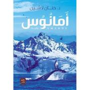
خيال وأدبأمانوس
تستدعي مملكة البلاغة محاربين للدفاع عن الكتب والقيم والكلمات. يقدم هذا الجزء الثالث مغامرة جديدة في عالم تفتح فيه الكتب طريقا إلى مملكة غير مألوفة.
حنان لاشين · نبذة تعريفية موثقةتعرف إلى الكتاب ←فيديو: ملخص بالعربية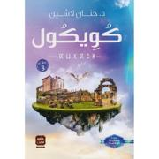
خيال وأدبكويكول
تبدأ النبذة بمطاردة تضع الهارب بين ملاحقيه وهاوية جبلية. التوتر والاختيار تحت الخطر يرسمان مدخلا إلى مغامرة خيالية، من دون كشف نتيجة المشهد.
حنان لاشين · نبذة تعريفية موثقةتعرف إلى الكتاب ←فيديو: ملخص بالعربية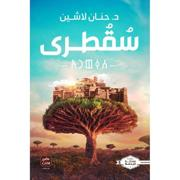
خيال وأدبسقطرى
امرأة شابة تخشى أن تبوح بأسرارها تستقبل زائرا يدفعها إلى استعادة أحداث مضت عليها سنوات. هكذا يمهد الوصف لعالم من الحكايات الغريبة والذاكرة المشحونة بالخوف.
حنان لاشين · نبذة تعريفية موثقةتعرف إلى الكتاب ←فيديو: ملخص بالعربية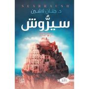
خيال وأدبسيروش
شاب يواجه ألما وخوفا قبل أن يحيط بجسده ضوء غريب ويدرك اختلافه. يقدم الناشر هذا التحول بوصفه مدخلا إلى الجزء السادس من مملكة البلاغة.
حنان لاشين · نبذة تعريفية موثقةتعرف إلى الكتاب ←فيديو: ملخص بالعربية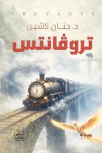
خيال وأدبتروفانتس
مقطورة قطار قديمة وغامضة تستقبل مسافرا جديدا، ثم تتحرك فجأة ويتبدل العالم خارج نوافذها. يفتح هذا المشهد بابا للخيال والمغامرة، ولا يكشف الوصف الرسمي وجهة الرحلة أو نهايتها.
حنان لاشين · نبذة تعريفية موثقةتعرف إلى الكتاب ←فيديو: ملخص بالعربيةخيال وأدبغزل البنات
حبات لؤلؤ وصندوق خشبي قديم يستدعيان حنينا إلى الماضي. يركز المشهد التعريفي على الذاكرة والأشياء التي تحتفظ بقيمتها العاطفية، ويترك سر الصندوق للقارئ.
حنان لاشين · نبذة تعريفية موثقةتعرف إلى الكتاب ←فيديو: ملخص بالعربية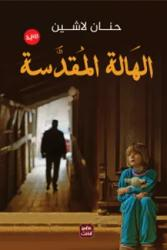
خيال وأدبالهالة المقدسة
أسامة طبيب ناجح اعتاد التخطيط الدقيق لحياته، قبل أن يلتقي بالطفلة فرحة. يفتح اللقاء سؤالا عن الألم والابتلاء وما قد تكشفه البراءة لشخص ظن أنه يعرف طريقه.
حنان لاشين · نبذة تعريفية موثقةتعرف إلى الكتاب ←فيديو: مراجعة بالعربية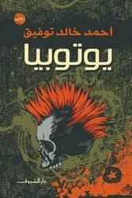
روايات أحمد خالد توفيقيوتوبيا
رواية ديستوبية تتخيل مجتمعًا انقسم بين أثرياء يعيشون داخل مدينة معزولة وفقراء يواجهون الجوع والعنف خارجها. ومن خلال مغامرة شاب من أبناء يوتوبيا خارج أسوارها، تطرح الرواية أسئلة قاسية عن الطبقية وفقدان التعاطف الإنساني.
أحمد خالد توفيق · نبذة تعريفية موثقةتعرف إلى الكتاب ←فيديو: ملخص بالعربية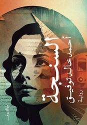
روايات أحمد خالد توفيقالسنجة
في منطقة دحديرة الشناوي على هامش القاهرة، تترك فتاة قبل موتها كلمة غامضة على جدار، فيحاول روائي هاوٍ فهم ما حدث. تجمع الرواية بين لغز اختفائه وحياة المهمشين، وسط الفقر والجريمة واضطراب الأيام المحيطة بثورة يناير.
أحمد خالد توفيق · نبذة تعريفية موثقةتعرف إلى الكتاب ←فيديو: ملخص بالعربية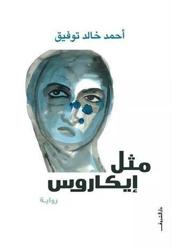
روايات أحمد خالد توفيقمثل إيكاروس
تتنقل الرواية بين الماضي والمستقبل، حتى تتجمع خيوطها داخل مصحة نفسية عند رجل قادر على قراءة أحداث لم يعشها الآخرون بعد. ومن خلال هذا الغموض، تسأل عن ثمن معرفة الحقيقة، وما إذا كان الإنسان مستعدًا لتحمل ما يعرفه.
أحمد خالد توفيق · نبذة تعريفية موثقةتعرف إلى الكتاب ←فيديو: ملخص بالعربية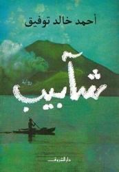
روايات أحمد خالد توفيقشآبيب
يحلم مكرم، الأستاذ في جامعة هارفارد، بجمع عرب المهجر في دولة واحدة تمنحهم الأمان وتستفيد من خبراتهم المتنوعة. وتتابع الرواية هذا الحلم عبر بلدان وقارات مختلفة، لتختبر حدود الإصلاح حين تختلط الغايات النبيلة بوسائل أخلاقية ملتبسة.
أحمد خالد توفيق · نبذة تعريفية موثقةتعرف إلى الكتاب ←فيديو: ملخص بالعربية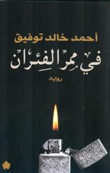
روايات أحمد خالد توفيقفي ممر الفئران
تقدم الرواية عالمًا كابوسيًا غارقًا في الظلام، لم يعد النور فيه حقًا مشتركًا بل امتيازًا تحتكره فئة محظوظة. ومن هذا التصور الديستوبي، تربط بين غياب الضوء والجهل والقهر، وتترك سؤال الخلاص معلقًا بين الأمل والوهم.
أحمد خالد توفيق · نبذة تعريفية موثقةتعرف إلى الكتاب ←فيديو: ملخص بالعربية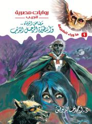
روايات أحمد خالد توفيقمصاص الدماء وأسطورة الرجل الذئب
يفتتح هذا العدد سلسلة ما وراء الطبيعة مع الدكتور رفعت إسماعيل وحكايتين ترتبطان بمصاص الدماء والرجل الذئب. وبين أجواء الرعب وغابات رومانيا والليالي المقمرة، يواجه القارئ خوفًا من أن يخفي الوجه المألوف حقيقة لا يمكن الاطمئنان إليها.
أحمد خالد توفيق · نبذة تعريفية موثقةتعرف إلى الكتاب ← فيديو: ملخص بالعربية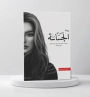
ملحمة الطين والنارالجساسة
تواصل الجساسة عالم أبابيل ضمن ملحمة الطين والنار. يركز التعريف بالعمل على مواجهة الذات إلى جانب الصراع الخارجي، من دون أن يكشف هذا العرض مصائر الشخصيات.
أحمد آل حمدان · نبذة تعريفية موثقةتعرف إلى الكتاب ←فيديو: مراجعة بالعربية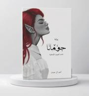
عالم أبابيلجومانا: ذات العيون البندقية
تعود جومانا إلى أحداث تسبق أبابيل في العالم الخيالي نفسه. يقدم التعريف فتاة ذات عينين بندقيتين وشعر رمادي، ويفتح باب التعرف إلى خلفية الحكاية من دون كشف تفاصيلها.
أحمد آل حمدان · نبذة تعريفية موثقةتعرف إلى الكتاب ←فيديو: مراجعة بالعربيةرعب وفانتازياخوف ٢
لا تنجح محاولة العودة إلى الحياة العادية، وتبدأ مغامرة جديدة مع عالم الجن والمجهول تهدد المقربين من البطل. هذا تعريف بفرضية الجزء الثاني، لا كشف لأحداثه أو نهايته.
أسامة المسلم · نبذة تعريفية موثقةتعرف إلى الكتاب ←فيديو: ملخص بالعربية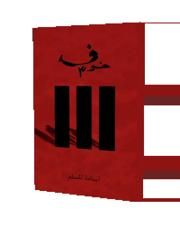
رعب وفانتازياخوف ٣
الجزء الثالث من سلسلة خوف لأسامة المسلم، في أجواء الرعب والفانتازيا. نكتفي هنا بهوية الجزء وموقعه في السلسلة، لأن المادة الموثقة المتاحة لا تكفي لسرد حبكته بأمان.
أسامة المسلم · نبذة تعريفية موثقةتعرف إلى الكتاب ←فيديو: ملخص بالعربيةمن المكتبة المجانية
كل التحميلات الرسمية ←
قشتمر
خمسة أصدقاء من العباسية يجمعهم مقهى قشتمر عبر مراحل العمر. ترصد الرواية اختلاف طبقاتهم وأفكارهم مع بقاء الصداقة، في خلفية من التحولات الاجتماعية والسياسية في مصر.
نجيب محفوظ · نبذة تعريفيةالتعريف والتحميل ←
حكاية بلا بداية ولا نهاية
مجموعة قصصية تتجه إلى الرمز والأسئلة الفلسفية عن الحياة والإنسان، وتتأمل العلاقة بين الإيمان والشك. هذه نبذة عن طبيعة المجموعة، لا تلخيص لكل قصة أو كشف لنهاياتها.
نجيب محفوظ · نبذة تعريفيةالتعريف والتحميل ←
في الأدب الجاهلي
دراسة نقدية تطرح أسئلة حول نسبة الشعر الجاهلي ومنهج قراءته. يعرض الكتاب موقف صاحبه الذي أثار نقاشا واسعا، ولا يعني تعريفنا به إقرار كل أحكامه النقدية.
طه حسين · نبذة تعريفيةالتعريف والتحميل ←
الإنسان في القرآن
بحث فكري في ماهية الإنسان ومكانته من منظور قرآني، مع مقارنات بعلوم الإنسان والنفس والأخلاق. نعرض اتجاه الكتاب العام ولا نقدمه بديلا عن التفسير المتخصص.
عباس محمود العقاد · نبذة تعريفيةالتعريف والتحميل ←